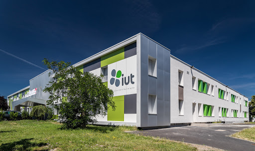

Candice Carton
Étudiante en BUT Informatique
Étudiante en deuxième année de BUT Informatique à l'IUT de Clermont-Ferrand, je me spécialise dans le développement mobile et web, avec des compétences complémentaires en gestion de bases de données et conception d'expériences interactives.
Je recherche une alternance pour ma 3e année, orientée développement mobile. Passionnée par la culture japonaise, les animés et le game design, ces univers influencent ma sensibilité créative et enrichissent ma façon d'aborder la conception d'interfaces et d'expériences utilisateur.




Candice - Développement web et mobile